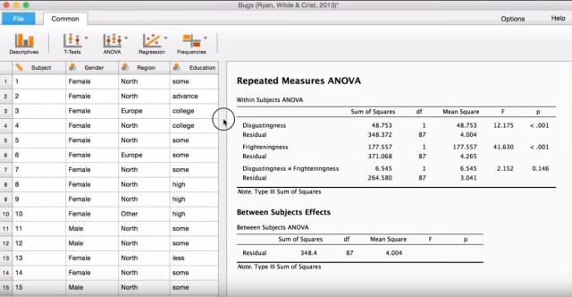

Diseños experimentales, programación de la recogida de datos y análisis cuantitativo.
Análisis psicométrico y técnicas de escalamiento de sujetos y/o objetos.
Mediación familiar sistémica, MRI.
Orientación y apoyo en procesos adaptativos.
Técnicas de registro psicofisiológicas, biofeedback y neurofeedback.
Desarrollo de gestor de contenidos adaptado al registro de datos en clínicas de terapia familiar
Automatización de los estadísticos descriptivos y análisis de eficacia.
Licenciatura en Psicología por la Universidade de Santiago de Compostela
Máster Internacional en Neuropsicología Clínica por la Universidad Europea Miguel de Cervantes
Máster en Estadística Aplicada y Análisis de Datos por el Colegio Universitario Cardenal Cisneros adscrito a la Universidad Complutense de Madrid (En curso)
Máster en Mediación de Conflictos Sociales por Divulgación Dinámica S.L.
Curso de Formador de Formadores por el Instituto Europeo de Formador de Formadores
Cursos Psicología y Publicidad, Curso Igualdade de Xénero, Cursos Delincuencia y Juventud, psicopatía y personalidad (USC), Redacción de documentos académicos y tesis doctorales (USC), Tratamiento de fobias (IEFF), Tratamiento de la eyaculación precoz (IEFF) y Tratamiento de ataques de pánico (IEFF), Gestión de la información científica en abierto (MiriadaX), Curso práctico de bioestadística con R (MiriadaX), Introducción Al Business Intelligence y al Big Data (UOC en MiriadaX), Rerpoducible research (Johns Hopkins University at Coursera), R programming (Johns Hopkins University at Coursera), Data scientist toolbox (Johns Hopkins University at Coursera), Primeros Auxilios Psicológicos Universidad Autónoma de Barcelona en Coursera), Metodología de la investigación en las Neurociencias (IAEU en Aberto), PNL: As botas de 7 leguas para unha psicoterapia eficiente (Victor Amat en ATFMG)...
Inglés: Nivel alto
Castellano: Nativo
Gallego: Nativo
LibreOfficem Office: Nivel experto
SPSS, R, Matlab: Nivel alto
Python: Nivel intermedio
Navegador: Nivel alto
Windows, GNU/Linux: Nivel experto
Carnet de conducir B2
Disponibilidad
Movilidad
Filtrar por temas: Análisis de Datos, Neuropsicología y Conducta, Programación y Software
La universidad de Harvard ha sido premiada con 28 millones de dólares para investigar por qué los cerebros son mejores aprendiendo y recordando información que la inteligencia artificial. El premio de Intelligence Advanced Projects Activity (IARPA), podría ayudar a hacer que las IA sean más rápidas, inteligentes y parecidas al cerebro humano.
Mientras que muchos ordenadores tienen una capacidad de almacenamiento significativa, su habilidad para reconocer patrones y aprender información no se acerca a la del cerebro humano. Una mejor comprensión de cómo se conectan las neuronas podría ayudar a desarrollar una inteligencia artificial más compleja.
Muchos neurocientíficos estiman que la 'capacidad de almacenamiento' para el cerebro humano se haya entre 10 y 100 terabytes, con algunas evaluaciones que acercan el número hasta los 2,5 petabytes. En términos de funcionalidad, el cerebro humano tiene un rango enorme; el análisis de datos, reconocimiento de patrones y la habilidad de aprender y retener información son sólo algunos pocos de los procesos por los que pasa a diario.
Un ser humano tan sólo necesita mirar un coche un par de veces para reconocerlo, sin embargo, un sistema de IA puede necesitar procesar cientos o miles de ejemplos antes de ser capaz de retener esa información. Contrariamente, a pesar de una funcinoalidad que debe ser más variada y compleja, el cerebro humano no es capaz de procesar el mismo volumen de información que un ordenador.
La John A. Paulson School of Engineering and Applied Sciences (SEAS), el Centrre for Brain Studies (CBS) y el departamento de biología molecular y celular de Harvard trabajarán juntos para registrar la actividad dentro del córtex visual. Esto, esperan que nos ayudará a entender cómo se conectan las neuronas las unas a las otras con el objetivo final de crear un sistema de inteligencia artificial más complejo y acertado Estos parendizajes pueden llevar a la creación del primer sistema informático que pueda interpretar, analizar y aprender información tan rápida y satisfactoriamente como lo hacen los seres humanos.
Estos sistemas, pueden ser utilizados para detectar ataques de redes, Interpretar imágenes de resonancias magnéticas, conducir vehículos, o completar cualquier otra tarea normalmente reservada para los cerebros humanos. El proyecto generará más de un petabyte de información, que será analizada por series de algoritmos complejos para crear un mapa neural detallado en 3D.
"El reconocimiento de patrones y las habilidades de aprendizaje de las máquinas todavía fallan en comparación con los cerebros más simples de los mamíferos", dice Hanspeter Pfister, profesor de ciencias computacionales de Harvard.
"El proyecto no sólo aleja el horizonte de la neurociencia, también aleja el horizonte sobre qué es posible en la ciencia computacional. Reconstruiremos circuitos neuronales a un nivel sin precedentes desde petabytes de datos estructurales y funcionales. Ello requiere que hagamos nuevos avances en el procesado de datos, computación de alto nivel, visión por ordenador y análisis de redes".
Una vez que se componga el mapa neuronal detallado, los equipos intentarán entendercómo exactamente las conexiones entre las neuronas permiten al sistema procesar información. Estos "algoritmos biológicamente inspirados" mejorarán las capacidades de la IA y podríamos ver grandes avances en la visión por ordenador, navegación y reconocimiento.
"Este es un reto como llegar a la luna", dice el líder del proyecto David Cox, profesor asistente de biología molecular y celular y ciencias computacionales. "El valor científico de registrar la actividad de tantas neuronas y mapear sus conexions es enorme, pero eso es sólo la primera mitad del proyecto".
"Tal y como nos planteamos los fundamentos subyacentes a cómo el cerebro aprende, no es dificil imaginar que eventualmente seremos capaces de desarrollar sistemas informáticos que puedan igualar e incluso superar a los humanos".
"Tenemos una tarea enorme ante nosotros en este proyecto, pero al final del día, esta investigación nos ayudará a entender qué es lo especial acerca de nuestos cerebros", añade. "Una de las cosas más excitantes acerca de este proyecto es que estamos trabajado en uno de los restantes grandes logros del conocimiento humano, entender cómo funciona el cerebro a un nivel fundamental".
29/01/2016
¿No estáis cansados de los confusos menús del SPSS y esas feas tablas que genera?, ¿no te frustra tener el software estadístico únicamente en los ordenadores de la universidad?, ¿te gustaría utilizar técnicas avanzadas como los estadísticos de Bayes, pero no quieres dedicar más tiempo a aprender un lenguaje de programación (como R o Python) por que prefieres centrarte en tu investigación?
A pesar de que no ha existido una solución real a este problema desde hace mucho tiempo, tenemos buenas noticias para ti procedentes desde la Journal of European Psychology Students. Un grupo de investigadores de la Universidad de Amsterdam están desarrollando JASP, un paquete estadístico de código abierto que incluye tanto las técnicas habituales como otras más avanzadas y pone especial énfasis en proveer una interfaz de usuario intuitiva.
La versión actual ya soporta una gran variedad de análisis, incluyendo los más habituales en la investigación en el campo de la psicología (como ANOVA, prueba-t o regresión múltiple).
Además de ser de código abierto, gratuito para todas las plataformas y ofrecer una considerable cantidad de análisis, JASP también presenta ciertas características distintivas como el cálculo a tiempo real y la salida de todos los resultados. Por ejemplo, si decides que quieres la mediana, a la par que la media en tu tabla, puedes seleccionar "Mediana" para que éstas aparezcan inmediatamente en la tabla de resultados. Para comparar, pensemos en como se haría en SPSS: Primero, habría que navegar por los menús (o editar la sintaxis), entonces, ejecutar la nueva sintaxis. Aparece una nueva ventana y obtienes una (fea) tabla nueva.

En JASP, obtienes tablas más bonitas sin dedicar tiempo. Aquí puedes ver una pequeña demostración de esta característica. Pero las cosas mejoran, las tablas ya están en formato APA y puedes hacer un copia-pega en Word. ¿Demasiado bueno para ser cierto? Lo es, ¡pero funciona!.
¿Cómo empieza el desarrollo de JASP?¿Cómo te involucras en este proyecto?
Antes de graduarme, usábamos SPSS y me molestaba lo poco eficiente que era. Como desarrollador informático, me parece angustiante utlizar un programa informático tan mal diseñado y el SPSS fue una espna que se me quedó clavada en la mente por cuatro años. Siempre estaba pensando cosas como "¿En serio, tengo que volver a repetir el análisis completamente por que me olvidé de X?", "¿Por qué no puedo presionar sencillamente en la salida del programa y ver qué opciones se han utilizado?", "¿Por qué tengo que leer esta horrorosa sintaxis?" o "¿Por qué han hecho esto de esta forma? Seguro que podrían haber utilizado tal otra manera".
Al mismo tiempo, estaba trabajando con Andrew Heathcote, escribiendo software para estudiar información sobre el tiempo de respuesta. Estábamos usando el lenguaje de programación R y por tanto, me expuse a esta ingente cantidad de librerías estadísticas que proporciona R. Por un lado, como programador, estaba excitado por tener acceso a todas estas técnicas estadísticas. Por el otro lado, como una persona que quería dar poder a la mayor gente posible, estaba decepcionado por la dificultad de usar R y las opciones limitadas de otorgar una buena interfaz de usuario con él.
Por ello, vi que había una necesidad real para ambas cosas -software estadístico atractivo, gratuito y abierto para reemplazar el SPSS, y una plataforma para que los expertos de metodología publicasen sus análisis con una interfaz rica y accesible al usuario. Sin embargo, el proyecto era de lejos demasiado ambicioso si no disponía de financiación, por lo que no vi forma de llevarlo a cabo.
Fue entonces cuando conocí a E.J. Wagenmakers, a quien acababa de recibir en el European Research Council una donación para desarrollar un paquete estadístico del estilo SPSS para ofrecer métodos Bayesianos, y él me ofreció la oportunidad de desarrollarlo. No sabía demasiado de metodología de Bayes en aquel momento, pero si que vi que nuestros objetivos tenían muchos puntos en común.
Por tanto dije "Por supuesto, deberíamos implementar la estadística clásica de todas formas" y la respuesta instantánea de E.J. fue "¡Nooooooooooo!" pero pronto vimos cual podria ser la importancia de esto. Si podemos liberar la plataforma subyacente que utilizan los científicos, entonces los científicos (incluidos nosotros mismos) podríamos ofrecer cualquier análisis que quisiéramos.
Y así es como nació el proyecto JASP y cómo los tres logros llegaron juntos: - Ofrecer una alternativa libre (abierta y gratis) al SPSS. - Ofrecer análisis Bayesiano de forma accesible. - Ofrecer una plataforma universal para publicar análisis con interfaz de usuario accesible.
¿Cuáles son los mayores retos a los que te has enfrentado como principal desarrollador de JASP?
Mantenerse concentrado. Existen cientos de objetivos, cientos de características que queremos desarrollar, pero debemos priorizar sin piedad. ¿Cuándo vamos a implementar el análisis factorial?, ¿cuándo vamos a terminar el módulo de ecuaciones estructurales?, ¿cuándo llegará la reestructuración de la entrada y edición de datos?, ¿la atención a los atípicos?, ¿cálculo de variables?. Todas estas son características necesarias; puede ser muy difícil decidir cuál toca después. Algunas veces pude ser demasiado abrumador. ¡Hay tanto por hacer! Necesito mantenerme a mi mismo recordando cuánto progreso estamos haciendo.
Mantener una experiencia de usuario consistente es también un gran reto. El equipo de JASP es muy grande, para que te hagas una idea, además de yo mismo están:
Con un equipo así de grande, desarrollar el software y todos los análisis de forma consistente y coherente puede ser todo un reto. Es tan fácil que cada análisis termine siendo un lío de propiedades y que los siguientes análisis que añadamos no se parezcan en nada a los anteriores. Por supuesto, proporcionar una experiencia de usuario consistente y elegante es una de nuestras prioridades, por lo que ponemos muchos esfuerzos en ello.
¿Cómo te imaginas JASP de aquí a cinco años?
JASP proporcionará la misma experiencia de usuario suave y sexy que tiene ahora. Sin embargo, para entonces dispondrá de completas facilidades en la entrada, edición, limpieza y estructuración de los datos. Dispondrá de todos los análisis comúnmente utilizados por los programas de psicología de pregraduados y postgraduados. Ofrecerá una ayuda y documentación comprehensiva, con ejemplos abundantes y cantidad de cursos online. Habrá libros de texto disponibles. Tendrá una creciente comunidad de metodólogos publicando los análisis que están desarrollando como módulos adicionales de JASP, y los investigadores aplicados tendrán acceso a los análisis de vanguardia de una forma que puedan comprender y manejar. Más estudiantes que nunca disfrutarán las estadísticas.
¿Cómo puede JASP estar al día con los métodos estadísticos "de moda"? Incluso cuando toma desarrollos escritos en R o similar, éstos siempre tienen que ser implementados por vosotros en JASP. ¿Hay una solución a este problema?
Bueno, si SPSS nos ha enseñado algo, es que no necesitas estar al día para ser un producto estadístico de éxito ¡je, je!. El plan es ofrecer herramientas para que los desarrolladores puedan escribir módulos de extensiones para JASP; herramientas para crear interfaces de usuario y herramientas para conectar esas interfaces a su análisis subyacente. Una vez que se desarrolla una extensión, puede aparecer en un directorio, una especie de "App Store", y la gente podrá evaluar el software en diferentes aspectos: estabilidad, facilidad de usuario, atractivo de la salida, y alguna más. De esa forma, esperamos incentivar lo más posible una buena experiencia de usuario.
Algunas personas piensan que ésto nunca funcionará, que los desarrolladores no pondrán nunca tanto esfuerzo en crear una software bonito y estable (por que se necesita un gran esfuerzo). Pero yo creo una vez los desarrolladores comprendan la importancia de hacer su trabajo lo más accesible al mayor público posible, se convertirá en una de sus prioridades. Por ejemplo, pensemos en el siguiente escenario: Alicia proporciona un buen análisis con una bonita experiencia de usuario. Bob desarrolla un análisis que es mucho mejor que el de Alicia, pero todo el mundo usa el de Alicia por su facilidad. Bob se decepciona de que todo el mundo utilice el de Alicia en lugar del suyo hasta que se da cuenta de que necesita ofrecer una experiencia bonita y accesible para que la gente utilice su análisis.
Espero que podamos crear una carrera armamentística en la que los desarrolladores traten de ofrecer una experiencia tan buena como sea posible. Si tu desarrollas un nuevo método y nadie lo utiliza, ¿has realmente desarrollado un método? Por supuesto, esta funcionalidad de extensiones no está lista todavía, pero no creo que lo esté dentro de mucho.
Comentas en tu página que se incluirán muchos métodos como el modelado de ecuaciones estructurales o herramientas para la manipulación de los datos. ¿Cómo podréis ofrecer una gran cantidad de características sin saturar la interfaz de usuario en el futuro?
En la actualidad, JASP utiliza una disposición en cinta; tenemos una pestaña de "Archivo" para operaciones de archivo y tenemos una pestaña "Común" que ofrece los análisis más comunes. Al añadir más y más análisis (a la vez que otras personas ofrecen módulos adicionales), éstos se ofrecerán como pestañas adicionales. El usuario podrá anclar o no las pestañas que le interesen. Puedes verlo en la versión actual de JASP. JASP puede ofrecerte únicamente lo que realmente necesitas, y la interfaz se puede mantener tan simple como quieras.
Los estudiantes que están considerando cambiar a JASP podrían querer saber si el desarrollo futuro de JASP está asegurado o si depende de obtener nuevas becas. ¿Qué nos puedes decir sobre esto?
En la actualidad JASP está financiado por una beca de la European Research Council (ERC), y hemos recibido apoyo del Center for Open Science. Adicionalmente, la Universidad de Amsterdam se ha comprometido a darnos un desarrollador de software de forma permanente, y acabamos de llevar a la práctica nuestro primer taller anual de Estadística Bayesiana con JASP. El dinero que ingresemos de estos talleres se re invertirá de nuevo en el desarrollo de JASP.
También estamos desarrollando estrategias a mayores para incrementar la financiación que recibe el proyecto. En primer lugar, estamos planeando ofrecer soporte técnico a las universidades y empresas que utilicen JASP a cambio de una cuota. Además, pensamos en pedir simplemente a las universidades que contribuyan al proyecto JASP con el coste de una única licencia de SPSS. Ello supondría una inversión excelente; nos permitirá acelerar el desarrollo y alcanzar las características del SPSS más deprisa, permitiendo a las universidades abandonar SPSS y sus costes antes. Por tanto, no me preocupo por la continuación de JASP en el futuro, pienso en como expandir JASP en el futuro.
Por supuesto, todo esto depende de la gente que utiliza actualmente JASP, y vendrá en la medida en la que la comunidad científica decida usar y seguir el proyecto. De hecho, la manera más fácil de que la gente pueda apoyar el proyecto JASP es simplemente usándolo y citándolo. Cuantos más usuarios y más citas tengamos, más fácil será para nosotros obtener financiación.
Dicho esto, ¡estoy menos menos preocupado por el desarrollo futuro de JASP que mi preocupación por SPSS!. No hay certezas de que haya un trabajo de desarrollo sobre él en absoluto. Igual deberíamos pasar el sombrero para IBM.
¿Cuál es la mejor forma de empezar a utilizar JASP?, ¿existen tutoriales y ejemplos resueltos?
Para las estadísticas clásicas, si has usado SPSS, o si tienes un libro sobre estadística con SPSS, no creo que tengas ninguna dificultad para utilizar JASP. Está diseñado para resultarle familiar a los usuarios de SPSS, nuestra experiencia es que la mayor parte de la gente no tiene dificultad para pasarse a JASP desde SPSS. También tenemos un video en nuestra página web que enseña algunos de los análisis básicos, tenemos en mente crear una serie completa de ellos.
Para las estadísticas Bayesianas, esto es un reto algo mayor. Nuestros mayores esfuerzos se dedican a tener el software listo, por lo que no tenemos tantos recursos para el aprendizaje de las estadísticas Bayesianas como nos gustaría. Esto es algo a lo que nos queremos dedicar en los próximos seis o doce meses. E.J. tiene al menos uno (igual tres) libros en mente.
Aun así, existen ciertos recursos disponibles ahora mismo, como puede ser:
Sin embargo, la mejor forma de aprender estadísticas Bayesianas es venir a nuestros talleres de JASP. Ya hemos hecho un par y han tenido muy buena acogida. Algunas personas se han mostrado rehacias a asistir por que JASP es tan fácil de usar que no encuentran sentido a venir para aprenderlo. Por supuesto, ¡esa es la clave!. JASP es tan fácil de usar que no es necesario aprender el programa y uno se puede concentrar por completo en el aprendizaje de lso conceptos Bayesianos. Así que mantened un ojo en la página de JASP para el próximo taller. Bayes va a ser cada vez más importante en el futuro. No te quedes atrás.
04/11/2015
La investigación psicológica ha reconocido progresivamente la importancia de integrar las dinámicas temporales en sus teorías, mientras las innovaciones en los diseños longitudinales y análisis han permitido a esas teorías ser formalizadas y probadas. Sin embargo, los investigadores en psicología están relativamente desequipados para analizar esa información con sus muchas características y las dificultades generales relacionadas con los modelos longitudinales. La investigación de los autores Andrew T. Jebb, Louis Tay, Wei Wang y Qiming Huang publicada en el área de metodología de Frontiers in Psychology muestra una introducción al análisis de series temporales de cara a la investigación psicológica, un área de análisis que ha sido esencial para entender y predecir la conducta de variables en campos de estudio diversos. Primero, se discuten las características de los datos en series temporales. Segundo, se estudian distintas técnicas de modelado en series temporales que pueden dirigirse a temas variados de interés para los nvestigadores en psicología, incluyendo la descripción de los patrones de cambio de una variable, modelado de efectos de calendario, evaluación del efecto a corto y largo plazo del impacto de un evento y predicción de valores futuros. Para ilustrar estos métodos, se expone un ejemplo ilustrativo basado en las conductas de búsqueda de empleo online y se proporciona un tutorial del software para estos análisis en R.
19/10/2015
Peter Sondergaard de Gartner escribió recientemente en Forbes, "El Big Data es el petróleo del Siglo XXI. Pero de todo su valor, la información es inherentemente inútil. Ésta no hace en realidad nada en absoluto a menos que sepas cómo utilizarla. El petróleo es inutil hasta que se refina a gasolina. La versión de petroleo refinado equivalente en el Big Data -algoritmos privativos que solucionan problemas específicos que se traducen en acciones- será la salsa secreta del éxito de las empresas exitosas del futuro. La próxima fiebre el oro digital se centrará en cómo poder solucionar cosas con tu información, no únicamente qué haces con ella. Esta es la promesa de la economía del algoritmo."
Sondergaard continúa, "Los algoritmos ya están presentes a nuestro alrededor. Consideremos el algoritmo de Google en las funciones de sus coches autónomos como la conexión entre software, información, sensores y activos físicos como un auténtico salto adelante en el transporte. Después de todo, ¿qué lo que convierte a Google en una de las marcas más valiosas del mundo? No es la información; son los secretos mejor guardados de la compañía, sus algoritmos. Los mercados de alta frecuencia es otro ejemplo. El algoritmo único de un trader dirige cada decisión que genera mayores retornos que sus competidores. El algoritmo supera a los datos a los que accede. ¿A dónde nos dirige esto finalmente? Software que piensa y actúa. El software cognitivo dirige interacciones autónomas máquina-máquina. Inteligencia artificial."
Angela Guess (2015) The Algorithm Economy , Dataversity
26/08/2015
El término 'Big Data' se define a si mismo haciendo referencia a conjuntos extremadamente grandes de información que las técnicas tradicionales no son capaces de procesar. El término no sólo se refiere a la información, sino también a las herramientas, las técnicas y el marco de trabajo donde se encuentra.
Los avances tecnológicos y el surgimiento de nuevos canales de comunicación (como las redes sociales) y dispositivos han presentado un reto para esta industria forzándola a encontrar nuevas formas de manejar esta información.
Desde la prehistoria hasta el año 2003 tan sólo se han producido en el mundo cinco mil millones de gigabytes de información. Esa misma cantidad de información en el año 2011 se llegaba a producir en tan sólo dos días. Ya en 2013, este volumen se producía cada diez minutos. Por ello, no es sorprendente que el 90% de la información en todo el mundo se haya generado en los últimos pocos años.
Toda esta cantidad de información puede ser muy útil una vez que se haya procesado, pero fue ignorada hasta la aparición del concepto del 'big data'.
Viendo estos ejemplos, es evidente que la información no es relativa únicamente a los volúmenes; incluye una gran variedad de información de tasas de velocidad muy rápidas. En 2001, Dough Laney -un analista industrial- especificó las tres 'V' del 'Big Data': Velocidad, Volumen y Variedad.
La velocidad a la que se distribuye la información hoy en día no tiene precedentes, haciendo extremadamente difícil manejarla a tiempo real. Los registros, los sensores y etiquetas RFID inteligentes hacen necesario el proceso a tiempo real de torrentes de información para empresas que encuentran muy difícil reaccionar rápidamente a esa información.
Hace no muchos años, tener demasiada información se resumía a un problema de almacenamiento. Sin embargo, el incremento de la capacidad de almacenamiento y los reducidos costes de su soporte, están llevando a los jugadores de esta industria a centrarse en cómo crear valor con información relevante.
A día de hoy, hay mayor variedad de información de la que podía existir hace tan solo unos años. La información se clasifica ampliamente como datos estructurados (datos relacionales), datos semi-estructurados (datos en hojas XML), y datos no estrucurados (registros de medios de comunicación, archivos en formato PDF, Word o texto). Muchas compañías tienen que lidiar con administrar, manejar y fusionar distintas variedades de datos.
La veracidad (la calidad de esta información), variabilidad (la inconsistencia que algunas veces muestra esta información) y complejidad (al trabajar con grandes volúmenes de información procedente de diferentes fuentes) son otras de las características importantes de la información.
R. Bhargav (2015) What is Big Data, and why should you care?, Data Science Central
26/08/2015
Recoge la trascripción del seminario de PNL que durante años impartieron Grinder y Bandler por todo el mundo. Esta obra reproduce fielmente el arte y el estilo incomparable de los creadores de la PNL, y abarca, entre otros temas, los mecanismos de la experiencia sensorial y de comunicación eficaz, técnicas de cambio personal y el método del reencuadre.
"La PNL representa tal enorme salto cuántico en nuestra comprensión de la conducta humana y de la comunicación, que hace que la mayor parte de las terapias y sistemas educativas parezcan obsoletos". Steve Andreas.
"¡Qué aburrido es ir de una creencia limitante a otra, y qué alegría leer a Bandler y Grinder, que no creen en nada y sin embargo usan de todo! Como calzada con las botas de siete leguas, la PNL lleva la terapia y el crecimiento personal muy lejos, mucho más lejos que cualquier otro enfoque previo". Barry Stevens.
JOHN GRINDER & RICHARD BANDLER son los creadores de la Programación Neuro-Lingüística, de la cual existen más de doscientas organizaciones repartidas por todo el mundo. La PNL nación en los años setenta como resultado de la colaboración entre un profesor de lingüística de la Universidad de California (Grinder) y un joven estudiante de psicología de la misma universidad (Bandler). Juntos estudiaron a tres extraordinarios psiquiatras: Fritz Perls, creador de la Gestalt; Virginia Satir, famosa por sus éxitos en terapia familiar, y Milton Erickson, el hipnoterapeuta más reconocido en el mundo. Grinder y Bandler tomaron los patrones de estos tres genios, los depuraron y construyeron un elegante modelo, la PNL, que puede emplearse, por un lado, para modelar la excelencia, y por otro, para la comunicación eficaz, el crecimiento personal y el aprendizaje acelerado. Juntos o separados, Grinder y Bandler imparten por todo el mundo cursos y seminarios de PNL y comunicación eficaz.
25/08/2015
Por primera vez en la historia, gracias a escáneres de alta tecnología diseñados por físicos, se han desvelado secretos del cerebro, y lo que un día fuera territorio de la ciencia ficción, se ha convertido en una asombrosa realidad. Grabación de recuerdos, telepatía, vídeos de nuestros sueños, control de la mente, avatares y telequinesia: todo esto no solo es posible, sino que ya existe.
El futuro de nuestra mente es el relato riguroso y fascinante de las investigaciones que se llevan a cabo en los laboratorios más importantes del mundo, todas basadas en los últimos avances en neurociencia y física. Algún día podríamos llegar a tener una «pastilla inteligente» que incrementara nuestro conocimiento; podríamos cargar nuestro cerebro en un ordenador, neurona a neurona; mandar nuestros pensamientos y nuestras emociones de un lugar a otro del mundo a través de una «internet de la mente»; controlar ordenadores y robots con el pensamiento; y tal vez rebasar los límites de la inmortalidad.
En esta extraordinaria exploración de las fronteras de la neurociencia, Michio Kaku plantea cuestiones que desafiarán a los científicos del futuro, ofrece una nueva perspectiva de las enfermedades mentales y la inteligencia artificial y presenta un nuevo modo de pensar en la mente.
25/08/2015
Había un tiempo en el que la neurociencia tan sólo podían soñar sobre tener este tipo de problemas. Ahora la fantasía se ha vuelto realidad, y debemos esforzarnos por resolverlo. Fantásticos nuevos instrumentos de registro están saturando el campo con una avalancha de datos brutos sobre los trabajos internos del sistema nervioso. El problema ahora se encuentra en que tratar de dar sentido a esta bonanza de información se ha vuelto un reto sobrehumano.
Casi todos los campos de la ciencia se enfrentan a un problema similar. Desde que el trabajo de laboratorio se ha trasladado a la realidad digital, la programación se convierte en parte indispensable del proceso. Al mismo tiempo, fuentes de financiación que existieron previamente se están secando. El resultado está siendo una dolorosa escasez de trabajos y becas que, a su vez, está impulsando a demasiados investigadores de gran talento a sobre-especializarse en sus áreas de trabajo sin permitirse invertir tiempo y energía en adquirir las nuevas habilidades necesarias en la era digital. En campos donde la cantidad de información crece a un ritmo fuera de control, como sucede en la neurociencia, la demanda de expertos informáticos está creciendo tan rápido como la propia información.
La ciencia necesita urgentemente hackers, en el sentido original de la palabra. Su ingeniería y habilidades de diseño serán útiles, pero lo realmente importante será la capacidad de innovar recursos, su curiosidad y ese apetito característico por los nuevos retos. En un campo particular como la neurociencia será inestimable su ayuda en la exploración del enorme desierto que suponen las nuevas redes neuronales.
Unos pocos pioneros lideran el camino. Sebastian Seung, uno de ellos, es profesor del Instituto de Neurociencia en el departamento de informática en la Universidad de Princeton. Hace unos años expuso junto con sus colaboradores un mapa de las conexiones neuronales de la retina. Recogiendo ingentes cantidades de información con microscopio electrónico, se cuestionaron cómo podrían interpretarla. Su conocimiento sobre el presente de la computación le dijo que ningún algoritmo de inteligencia artificial actual podría manejar la tarea él sólo.
La solución, entonces sin precedentes, fue reclutar miles de personas voluntarias junto a una IA puntera y aprovecharse de su capacidad cerebral colectiva. El 10 de diciembre de 2012, Seung y su equipo lanzaron el juego online EyeWire, donde los jugadores acumulaban puntos al ayudar a mejorar un mapa neural. Un año y medio después los autores publicaban sus primeros resultados en Nature con una nota que acreditaba como co-autor a los 2.183 jugadores que habían alcanzado las puntuaciones superiores del juego haciendo posible la publicación.
Los hackers están encontrado sus propios caminos dentro de la neurociencia. A finales del 2013, los diseñadores Joel Murphy y Conor Rossomanno presentaban OpenBCI en Brooklyn, N.Y., un interfaz cerebro-ordenador de código abierto -básicamente un electroencefalógrafo casero-. se pueden adquirir desde su página web kits y planos con un funcionamiento tan bueno como sería el de un instrumento profesional por un pequeño porcentaje. Su campaña de dos meses en Kickstarter vendió cerca de 1000 unidades y llamó la atención de laboratorios de investigación académicos. Es tan sólo otro ejemplo de cómo las caen las barreras tradicionales entre la ciencia institucional y las personas con nuevas ideas. De hecho, algunos laboratorios han empezado a publicar retos de investigación con premios en efectivo en plataformas de crowdsourcing como Kaggle e InnoCentive. Ahora, si una entidad decide no explorar estos acercamientos colaborativos, corre el peligro de quedarse atrás.
La comunidad de programadores ha demostrado en los últimos 20 años que la colaboración por Internet puede hacer maravillas. Hoy, las ciencias están empezando a descubrir ese potencial. Los investigadores de prestigio harían bien en reconocer que los verdaderos hackers están motivados por los desafíos y orgullosos de ver qué qué es los que pueden llegar a hacer.
Daniel Goodwin (2015) Neuroscience Needs Hackers, Scientific American
25/08/2015
Si ya has vivido la experiencia de conseguir el manual de publicación de la APA, seguro que tu experiencia ha sido igual que la del común de nosotros "Ohh!! 272 páginas de aburrimiento mortal". ¿La gente se lee realmente esta monstruosidad? No lo se, no lo creo. Lo que sí se es que yo no me lo leí hasta la última coma. Puede que las críticas sean comunes pero, en realidad, esto es lo que hay. El 'estilo APA' es el más común en las principales publicaciones del área de la psicología y salud. Y, siceramente, utilizar un estandar para los documentos académicos no es en absoluto una mala idea. Ayuda al lector a encontrar la información que busca de forma más eficiente. Ayuda a los autores a ajustarse a los requisitos de las revistas y ayuda a los revisores a concentrarse en el contenido. Pero, lo que es más importante, establecen una metodología que será aceptada por una gran cantidad de medios. Imagina un mundo en el que tienes que hacerte familiar con cada estilo diferente en cada situación en la que eliges una publicación para tu trabajo.
A los estudiantes de psicología se les hace duro adquirir y manejar las guías de publicación de la APA. Los 9 errores más comunes, de acuerdo con el Journal of European Psychology Students son:
El conocimiento del 'estilo APA' es limitado incluso para investigadores experimentados, y eso está bien. Uno se puede sentir orgulloso de que los investigadores usen su limitado tiempo en la investigación o la formación, en contraposición a memorizar el 'Manual de Publicación'. La vida es demasiado corta para aprender todos los resquicios del manual de estilos de la APA.
Si quieres publicar investigación psicológica, necesitarás escribir documentos adecuadamente ajustados al formato de estilos de la APA. Afortunadamente, este es un problema que muchos investigadores se encuentran; en otras palabras, no hay necesidad alguna de empezar de cero. Puedes utilizar una plantilla APA para los procesadores de textos más comunes como Microsoft Word o Libre Office que se encargue de ajustar las propiedades de página, interlineado, etc. Pero quiero convencerte de que existe una forma mejor de escribir tus documentos que previene todos los errores que ya hemos mencionado y alguno que otro a mayores. Quiero presentarte el Markdown, un sistema de escritura fácil de leer y utilizar que hace especialmente sencillo seguir el estilo de la APA.
Un principio general en tipografía -ya sea en impresión (digital) o en la web- es separar el contenido y el estilo. Esta separación se sigue normalmente mediante el uso de un lenguaje de marcado, un sistema de anotaciones en el documento. Estas anotaciones declaran porciones del texto como título, cabeceras de secciones, lista de elementos pero crucialmente, son agnósticos a lo que esto significa visualmente (p.ej., <bold>texto</bold> en lugar de texto ). Existen varias ventajas para este acercamiento pero aquí sólamente nombraremos tres brevemente:
¿Te estoy sugiriendo reemplazar un diablo por otro? ¿No aprender el 'estilo APA' significa aprender todo un nuevo lenguaje? No, Markdown está pensado para ser tan fácil de aprender y fácil de escribir como sea posible. Lo que sigue es un fragmento de un ejemplo de documento de la APA escrito en Markdown.
# Methods
## Participants
Younger adults (14 women, 10 men, $M_{age} = 19.5$ years, age range: 18–22 years) were recruited with flyers posted on the Boston College campus. <!-- Add flyer to appendix! -->
Older adults (15 women, nine men, $M_{age} = 76.1$ years, age range: 68–84 years) were recruited through the Harvard Cooperative on Aging (see Table 1, for demographics and test scores).[^p]
[^p]: Analyses of covariance were conducted with these covariates, with no resulting influences of these variables on the pattern or magnitude of the results.
Sin saber absolutamente nada de Markdown, debería ser fácil acertar qué significan las anotaciones. # declara cabeceras de sección jerárquicas, <!-- y --> recogen comentarios, y [^p] añade una referencia a un pie de página. Como puedes ver, Markdown es fácil de aprender y rápidamente te ahorrará tiempo en la escritura de documentos. Lo único atemorizante al principio son las ecuaciones recogidas por $. Las ecuaciones se escriben en la poderosa aunque simple sintaxis usada en LaTeX. A pesar de que LaTeX es ampliamente utilizado para escribir documentos completos (no únicamente ecuaciones), no es muy popular en el campo de la psicología, probablemente por su complejidad y su lenta curva de aprendizaje.
Si no estás usando un gestor de referencias como Zotero, te recomiento enormemente que empieces. Los gestores de referencias son como iTunes para tu literatura; te ayudan a buscar, descargar y organizar documentos. Lo que es más importante, con un par de clicks puedes exportar una lista de referencias que necesites para tu documento a un archivo .bib. Una vez que tus referencias están en un archivo .bib que se encuentra en la misma carpeta que tu documento Markdown, puedes añadir fácilmente las citas a tu documento Markdown. Cada referencia tiene un identificador único, por ejemplo lewandowsky_computational_2001 que puedes usar en Markdown. @lewandowsky_computational_2001 crea una cita dentro del párrafo; [@lewandowsky_computational_2011] crea una cita entre paréntesis. Todo lo relacionado con referencias, como citas dentro de párrafo o citar secciones se hará automáticamente.
Para pasar de tu documento Markdown a un lustroso documento tipo APA, neesitas activar ciertas opciones para entonces generar un archivo .pdf. Todo puede hacerse de forma manual, pero una forma fácil es usando el editor RStudio (un editor de texto para R, pero no necesitas textualmente ningún conocimiento sobre R para hacer esto) y papaja, un paquete para R. Dentro del proceso hay pasos intermedios y software que no es verdaderamente importante conocer. RStudio hará todo esto haciendo click en un botón. Por otra parte, si usas R para tus análisis, puedes incluir el código de tu análisis en tu documento y adjuntar estadísticas, imágenes, tablas sobre la marcha mientras escribes tu manuscrito. Esto es lo que se denomina documento dinámico (Xie, 2013) y el tema de un artículo en el futuro.
Si quieres intentar escribir un documento en Markdown, necesitas instalar un par de cosas:
Asegúrate de que instalas la versión completa de TeX -no la básica- y si estás usando Ubuntu 14.04 necesitarás algunos paquetes TeX a mayores. Finalmente, instala la versión en desarrollo de papaja desde RStudio copiando en la consola las siquientes líneas:
install.packages("devtools")
devtools::install_github("crsh/papaja")
Una vez instalado papaja podrás crear documentos APA a través e los menús en RStudio (File > New File > R Markdown). Si dedicas un poco de tiempo a explorar el menu encontrarás que Markdown se puede utilizar para crear diferentes tipos de documentos como presentaciones en HTML.
El nuevo documento de texto contiene una cabecera recogida por --- seguida del cuerpo del texto. Habrá algunas lineas de R con aspecto amenazador siguiendo a la cabecera; siéntete libre de borrarlas todas. Para obtener una vista previa de tu documento haz click en el botón Knit.
Si presionas sobre el signo de interrogación junto a él, puedes recibir información acerca de Markdown en caso de que te quedes bloqueado. Igualmente, consultar el documento de ejemplo de papaja te puede resultar útil. Todo lo que necesitas hacer ahora es rellenar la meta-infromación, p.ej., autores, título, abstract en la cabecera del documento, empezar a escribir, y dejar de preocuparte del estilo APA.
Puedes visitar la fuente original:
Frederik Aust (2015) How not to worry about APA style, JEPS Bulletin: The Official Blog of the Journal of European Psychology Students
25/08/2015
"Creo que hemos descubirto la función del neocórtex", nos explica Fergal Byrne desde su página web. Es (el neocórtex) una máquina que utiliza información sensoriomotora procedente de sistemas complejos del mundo para construir y ejecutar simulaciones de esos sistemas. El Algoritmo de Aprendizaje Cortical (Cortical Learning Algorithm en inglés) proporciona una estructura auto-organizativa que puede simular automáticamente una gran variedad de fenómenos del mundo real. El diseño del neocórtex está específicamente ajustado a la tarea de mantener un modelo del mundo frente al complejo sistema cambiante.
Ilustrémoslo con un ejemplo de la vida cotidiana. Llevar una bici real en una calle real es una tarea extraordinariamente difícil para un programa de ordenador. Si tratamos de desarrollarlo al estilo de los años 50, empezaríamos identificando un gran sistema con ecuaciones diferenciales parciales, para entonces encontrar una forma de resolverlas numéricamente de cara a controlar el robot. Esto no parece ni próximo a intentarlo en la práctica, mientras que el resultado sería un sistema muy poco flexible. Existe otro acercamiento, no obstante. Un método muy popular en la robótica y el control de sistemas hoy en día es el PID (proportional/integral/differencial proporcional/integral/diferencial en inglés), que combina círculos de retroalimentación entre la sensación y la acción.
Veamos un vídeo de un sistema de este estilo:
Lo que aquí sucede es simple. El robot está usando sus sensores para detectar cómo se desarrollan las cosas y reaccionar a los cambios en los datos sensoriales para mantener la estabilidad.
El sistema controlador del movimiento de la bicicleta es un ejemplo de sistema dinámico no lineal. El mundo en el que vivimos está repleto de este tipo de sistemas, pero en los últimos siglos la física ha tratado de prescindir de ellos a favor de una pretensión de que el mundo es lineal. Mucha de la física y la matemática aplicada que aprendemos en el colegio e instituto nos acerca a una realidad simplista de sistemas lineales. Sólo en el último siglo o menos (y cada vez de mayor forma con el incremento de las simulaciones por ordenador) hemos empezado a examinar los sistemas dinámicos no lineales en detalle.
El resultado más famoso de la ciencia de los sistemas dinámicos reciente es el descubrimiento del Caos, que recoge la evolución de la conducta, aparentemente impredecible, en sistemas simples, no lineales y deterministas. Más allá de aquellos advertidos del concepto del caos, la mayoría de las personas bien formadas no tienen conocimientos reales de cómo funcionan los sistemas no lineales, qué se puede saber sobre ellos o como se relacionan con sistemas distintos. De hecho. éste se ha convertido en el principal campo de estudio de las matemáticas aplicadas en los últimos 40 años donde algunas de las personas más inteligentes han hecho grandes progresos en la comprensión de estos fenómenos complejos y poco intuitivos. Volveremos a ellos pronto.
Uno de los sistemas más interesantes de este tipo se encuentra, por supuesto, en nuestro cerebro. Descrito a menudo como "la cosa más compleja del universo conocido", el cerebro es de hecho una cosa desalentadora para estudiar. Muchas personas han examinado las estructuras neurales como sistemas dinámicos, proponiendo que las dinámicas no lineales son la clave para desentrañar cómo funciona el cerebro. De hecho, varios investigadores han demostrado que modelos simples de redes neuronales pueden mostrar algunos tipos de propiedades computacionales similares a las que se puede encontrar en el cerebro.
Entonces, el cerebro aparenta una maraña de de sistemas dinámicos interaccionando, donde sea que veas, a todas las escalas. Por esto, ¿será estas cosas todavía más complejas de comprender? Bueno, sí y no. Sí, tendremos que abandonar la tranquilidad de nuestra costumbre a la hora de ver sistemas lineales por doquier a cambio de introducirnos en un mundo de incertidumbre e impredictibilidad. Y no, podemos entender ahora en realidad cómo los sistemas no lineales revelan la verdadera naturaleza de la inteligencia animal.
Los sistemas dinámicos no lineales son raros. Pueden ser totalmente deterministas (a pesar de ser aleatorios), pero prácticamente impredecibles. Son increíblemente sensibles a las condiciones iniciales y en la práctica no deberían repetir exactamente las mismas secuencias de nuevo. Pueden contener muchas variables internas dejándonos sin oportunidad de usar métodos de análisis para modelarlos.
Increíblemente, muchos sistemas dinámicos tienen una propiedad mágica. "Responden" información suficiente de la que recogen permitiéndonos construir modelos con los mismos tipos de dinámicas que el original. Esta propiedad se descubrió en la década de los 70 en la "era dorada" de los sistemas dinámicos, y se ha aplicado constantemente a una enorme variedad de áreas.
Podemos ver un video de Steve Strogatz y Kevin Cuomo:
Entonces, ¿qué está pasando aquí? Bueno, el circuito de envío es un sistema dinámico analógico que está ejecutando uno de los grupos de ecuaciones más famosas de los sistemas dinámicos, las ecuaciones de Lorenz. Los detalles no son importantes (para este artículo), pero fundamentalmente el sistema tiene tres variables internas que se relacionan entre ellas con un sistema de ecuaciones diferenciales relativamente simple. Se puede ver aquí una animación del sistema de Lorenz:

Es bonito. Se pude apreciar la elegante estructura de las trayectorias trazadas por el punto y el extraño sistema de simetría y espirales del espacio similar a una mariposa por donde orbita. En realidad, este sistema es infinitamente complejo y se ha convertido en el "Hola Mundo!" de la ciencia de los sistemas dinámicos.
De acuerdo, así que el sistema de envío se está comportando como un sistema de Lorenz, con un voltaje en el circuito actuando como las cordenadas x, y y z. El circuito receptor es también un emulador Lorenz con prácticamente las mismas condiciones que el emisor (al ser componentes electrónicos reales no pueden ser exactamente idénticos). Ahora, el truco está en tomar tan sólo una salida del circuito emisor (digamos x), y usarla como x' en el circuito receptor. Como dice Strogatz en su libro Sync, es como si la x' haya sido controlada por la señal del emisor. Normalmente x', y' y z' trabajan juntas para producir la elegante trayectoria que se ve en la animación, pero ahora x' está simplemente ignorando los pasos de baile que no parecen tener otra oportunidad que sincronizarse con los del compañero lejano.
Este efecto misterioso es mucho más común de lo que podemos pensar. Se pueden reconstruir enormes sistemas dinámicos únicamente desde la medida de sus emisiones sin necesidad de conocer ni sus variables internas ni sus ecuaciones. Este resultado se basa en el Teorema de Takens que se demuestra para ciertos sistemas (como en el caso del sistema de Lorenz).
Aquí hay un video con tres partes que explica cómo funciona esto:
La primera parte presenta el sistema de Lorenz. La segunda muestra el Teorema de Takens, y la parte final enseña cómo se puede aplicar para evaluar dependencias causales entre series temporales.
Este fenómeno es la clave para entender qué es lo que está haciendo el neocórtex. Está usando la serie temporal de información sensorial para formar una imagen de las dinámicas del mundo y usarlas para la identificación, previsión, modelado, comunicación y conducta. Es un punto, pero ésto no nos dice cómo lo hace, vamos a verlo.
Ya se ha hecho referencia anteriormente al trabajo de Gregor Hoerzer, que usa redes neurales recurrentes (RNNs por sus siglas en inglés) para modelar algunos pocos aspectos de la computación caótica. las RNNs son simlares a otros tipos de redes neurales artificiales de Aprendizaje Profundo (Deep Learning) que usan "neuronas puntuales" extremadamente simples. Se diferencian de éstas en que sus salidas pueden acabar (después de unos cuantos bucles) como parte de su propia entrada. Esto otorga a las RNNs mucho más poder que otras redes neurales artificiales (ANNs), lo que explica por qué son actualmente un tema caliente en el Aprendizaje Maquina (Machine Learning).
Parecen ser tan exitosas en la actualidad debido a que usan los trucos que hemos visto para autoorganizarse para recrear las dinámicas simuladas y permitir gran cantidad de modelado, predicción y generación. Las RNNs son poderosas, pero engorrosas y complejas de comprender. Posiblemente, otros tipos de estructuras neurales podrían tener incluso más capacidad y (crucemos los dedos) ser más simples de comprender y razonar sobre ellas.
En la teoría de Jeff Hawkins sobre la memoria temporal jerárquica (HTM por sus siglas en inglés) se sustituyen las neuronas puntuales por un modelo más realista de neurona que son mucho más complejas y tienen un poder computacional significativo en si mismas. Las neuronas se agrupan en columnas, y las columnas forman capas. Esta estructura está basada en el estudio del neocórtex y es una aproximación razonable a lo que podríamos encontrar en un cerebro real.
La clave de la HTM es que las capas se combinan y conectan de la misma forma que el cerebro. Cada capa tiene diferentes entradas y de comporta en su forma particular de actuar según su región (pequeño área del córtex donde se encuentra).

Además de asustar, este diagrama muestra un esbozo mínimo de las principales conexiones en un modelo multicapa. Muestra cómo la principal información fluye en una región del neocórtex hacia las diferentes regiones con una estructura jerárquica. [...]
El punto clave aquí es que subpoblaciones de neuronas tienen la capacidad de aprender a modelar dinámicas del mundo en diferentes escalas temporales, y que los cambios en las características del sistema en el "mundo real" produce cambios en la elección de la subpoblación que se selecciona en las capas inferiores, llegando a una nueva representación del mundo por la región y nuevas reacciones conductuales o motoras a las nuevas dinámicas.
Para un análisis en profundidad recomendamos visitar las fuentes originales:
26/05/2015
«Los números producen terror», escribe Darrell Huff en Cómo mentir con estadísticas. Y en ninguna parte este terror se traduce mejor que en la aceptación ciega de lo que nos dice el resbaladizo mundo de los promedios, las correlaciones, los gráficos y las tendencias. Huff trató de romper «el aturdimiento que sigue a la coli sión de las estadísticas con la mente humana» con este pequeño volumen, publicado por primera vez en 1954. El libro sigue siendo pertinente como una llamada de atención para las personas acostumbradas a examinar aluviones de datos o para aquellos que a diario nos vemos rodeados de noticias de grandes titulares avalados por estadísticas. «El lenguaje secreto de las estadísticas, tan atractivo, se emplea como arma sensacionalista, o para inflar, confundir o simplificar en exceso», advierte Huff. Aunque muchos de los ejemplos utilizados en el libro son ya antiguos, las precauciones son intemporales. Consigue este libro
13/05/2015
No hay estadísitico más difamado que el p-valor (P value en inglés). Se han escrito cientos de artículos de investigación y posts en blogs sobre lo que algunos estadistas han ridiculizado como 'test de significación de la hipótesis nula' (NHST por sus siglas en inglés 'null hypothesis significance testing'). El pasado mes de febrero, la revista Basic and Applied Social Psychology cruzaba una línea al prohibir los estudios de metodología NHST (junto a todos los de inferencia estadística).
Esta prohibición, nos dicen Jeffrey T. Leek y Roger D. Peng en Nature, tendrá un escaso efecto sobre la calidad de la literatura científica que publican. Existen muchos pasos en el diseño y análisis de un estudio. El último de estos pasos es el cálculo de un estadístico como el P-valor y su uso en una regla de decisión (por ejemplo, P<.05). En la práctica, decisiones que se toman antes en el análisis de datos tienen un impacto mucho mayor sobre los resultados, desde el diseño experimental hasta los efectos de lotes, dificultades de ajuste en los factores componentes, o simples errores de medida. Se pueden alcanzar niveles aleatorios de significación estadística cambiando la forma en la que los datos son depurados, resumidos o modelados.
Los p-valores son una diana fácil: extensamente utilizados y ampliamente abusados. Pero, en la práctica, desregular la significación estadística abre la puerta a todavía mayores vías de jugar con las estadísticas -intencionada o no intencionadamente- para lograr un resultado. Sustituir los p-valores con factores de Bayes o algún otro estadístico es, en último término, escoger un método alternativo de lidiar con los falsos positivos y verdaderos positivos. Discutir sobre el p-valor es como centrarse en una falta de ortografía en lugar de en la falta de lógica de la frase.
Una mejor educación es un comienzo. [...] A todos los investigadores que supervisan análisis de datos se les debería exigir desde sus universidades o instituciones una formación completa en la comprensión de los resultados y sus problemas potenciales en un análisis.
Existe formación online diseñada específicamente de cara a atender estas dificultades. Por ejemplo, la Especialización en Ciencia de Datos (Data Science Specialization en original), que ofrece la Universidad Johns Hopkins en Baltimore, entre otras, se puede orientar a formación e investigación.
Pero sólo con la formación no es suficiente. El análisis de datos se enseña a través de un modelo de aprendices y maestros, y diferentes disciplinas desarrollan sus propias subculturas de análisis. Las decisiones se basan en las convicciones de comunidades específicas más que en la evidencia empírica. [...]
La investigación estadística se centra de largo en la estadística matemática, evitando la conducta procesos involucrados en el análisis de datos. Para solucionar este profundo problema, debemos estudiar cómo se llevan a la práctica los análisis de datos en el mundo real. ¿Qué es lo que determina su éxito o fracaso? Se han hecho experimentos controlados en visualización y análisis de riesgo para evaluar cómo las personas percibimos y nos relacionamos con los datos y las estadísticas. Más recientemente, los autores, junto a tantos otros, se han estudiado el protocolo completo de análisis encontrando, por ejemplo, que los analistas de datos recién formados no saben cómo inferir el p-valor desde las gráficas, pero que pueden aprender con la práctica.
El logro final es el análisis de datos basado en la evidencia, análogamente a la medicina basada en la evidencia, donde solamente se aplican tratamientos con eficacia demostrada en estudios controlados. Los estadistas y las personas a las que enseñan y con las que colaboran deberían dejar de discutir sobre p-valores y prevenir el resto del iceberg del hundimiento en la ciencia.
Jeffrey T. Leek y Roger D. Peng (2015) Statistics: P values are just the tip of the iceberg, Nature, 520, 612
08/05/2015
Este año 2015, la APA (American Psichological Association) hace una llamada sobre el campo del Big Data para su publicación en Psychological Methods. En su comunicado público hace referencia a la importancia de este campo en la investigación psicológica.
El Big Data - que se relaciona con el almacenamiento, tratamiento y análisis de grandes cantidades de información- aparece en la literatura científica desde el principio de los años noventa. Otros conceptos como minería de datos (data mining), análisis de datos o análisis predictivo y ciencia de datos (data sceince) también se han referido a este campo.
Este área se ha relacionado tradicionalmente con la informática y la estadística aplicada, tanto como con las empresas, genómica, medicina y ciencias medioambientales. Son muchas las empresas que se dedican a este ámbito (p.ej., seguros, producción, farmacéutica, transportes, leyes, juego, telecomunicaciones, hoteles, etc.). También las redes sociales (social media) están profundamente relacionadas (p.ej., Google, Facebook, LinkedIn, Yahoo, Twitter, etc.).
Existe incluso una revista de acceso abierto y revisión por colegas que es la Big Data journal y que da cobertura en su página web sin mencionar a la psicología o incluso alguna otra ciencia social.
Entonces, ¿dónde encaja la psicología en el campo del Big Data? Existen ciertas áreas donde la psicología está empezando a hacerse un hueco: el bienestar, la salud mental, la depresión, el abuso de substancias, conductas saludables, cambio en los patrones de funcionamiento de la persona, redes y comunicaciones sociales, aprendizaje y ajuste o psicología de la organización industrial entre otras.
Otras áreas y campos relacionados con la psicología podrían hacer contribuciones significativas atendiendo a la ética de la recolección del Big Data, dando guías de actuación para el acceso abierto a grandes bases de datos o el desarrollo y distribución de más métodos para un análisis de los datos relacionados de múltiples bases de datos distintas, así como métodos innovadores de análisis, evaluación e interpretación a la par que validación de los resultados de estos estudios usando grandes bases de datos que pueden crecer y cambiar rápidamente.
Concluye la APA, en definitiva, que el Big Data ha venido para quedarse, ofreciendo a la ciencia del análisis de la conducta una oportunidad única para vincularse. El Big Data puede ser una gran herramienta en el descubrimiento de patrones y a la hora de hacer predicciones desde grandes conjuntos de información, haciendo avanzar a la ciencia psicológica.
28/04/2015